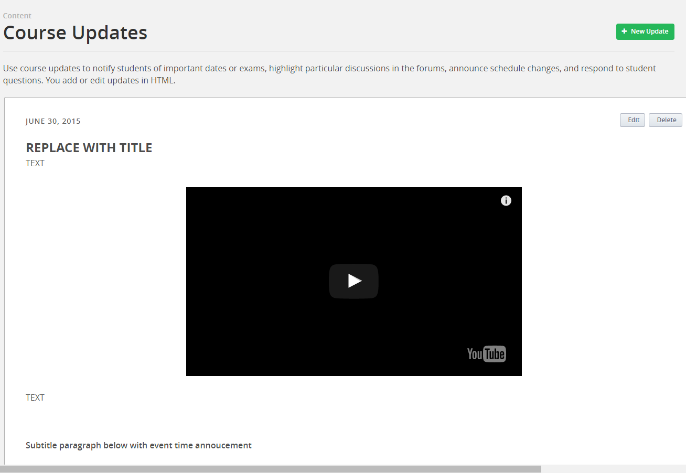

Creating Course Annoucements¶
- Draft the announcement in studio.edge.edx.org
Select “Updates” from the “Content” tab.
Copy and paste the template below into the html editor:
<h1 id="#replace-with-title"><b>REPLACE WITH TITLE</b></h1>
<p>TEXT</p>
<br>
<div align="center"><iframe src="//www.youtube.com/embed/ReplaceWithYouTubeId?wmode=transparent&modestbranding=1&showinfo=0&rel=0" allowfullscreen="" height="360" width="640" frameborder="0"></iframe></div>
<br>
<p>TEXT</p>
<br>
<h3>Subtitle paragraph below with event time annoucement</h3>
<br>
<p>Your first assignment which is due on Friday, February 13 at 23:30 UTC (click<a href="http://www.timeanddate.com/worldclock/fixedtime.html?msg=Homework%3A+Assignment+%231&iso=20150213T1130&p1=1440" target="_blank"> here </a>to see time conversion).</p>
2.Preview the announcement in the live edge course
3.Copy the same html to the studio.edx.org course
Note, when you create a new update there is no preview mode (it will be posted to the course space and be visible to student’s as soon as you save)
4.(Optional) Post the URL to the discussion updates thread. (This is applicable only if students have been asked to follow a specific thread for updates.) Respond to the thread with a link to the update.
Thread Contents

